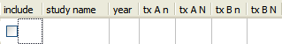
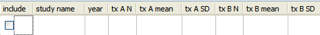
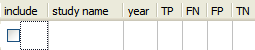

Open Meta-Analyst supports the following data types:
You specify the data type when you create a new data set, as described in Creating a New Data Set.
The data table displays different data columns, depending on the type of the current data set, as shown below.

Binary data has the following data columns:
- tx An - Number of events in the treatment group
- tx AN - Number of subjects in the treatment group
- tx Bn - Number of events in the control group
- tx BN - Number of subjects in the control group

Continuous data has the following data columns:
- tx AN - Number of subjects in the treatment group
- tx A mean - Mean in the treatment group
- tx A SD - Standard deviation in the treatment group
- tx BN - Number of subjects in the control group
- tx B mean - Mean in the control group
- tx B SD - Standard deviation in the treatment group

Diagnostic data has the following data columns:
- TP - Number of true positives
- FN - Number of false negatives
- FP - Number of false positives
- TN - Number of true negatives